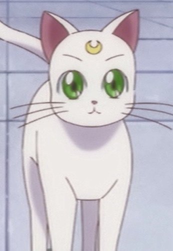

|  |
Artemis |
- Sailor Moon
- Sailor Moon R
- Sailor Moon R: The Movie
- Sailor Moon R: Make-Up! Sailor Senshi
- Sailor Moon S
- Sailor Moon S: The Movie
- Sailor Moon Super S: The Movie
- Sailor Moon Super S
- Sailor Moon Super S Plus: Ami's First Love
- Sailor Moon Super S Special
- Sailor Moon Sailor Stars
- Sailor Moon Sailor Stars: Hero Club
- Sailor Moon Memorial
- Sailor Moon R Memorial
- Sailor Moon S Memorial
- Sailor Moon Super S Memorial
- Sailor Moon Sailor Stars Memorial
|
Artemis is Minako Aino's feline companion. He trained Minako to be Sailor Venus. He is more easy going than Luna and a big brother figure to Minako. He cares deeply for Luna. |